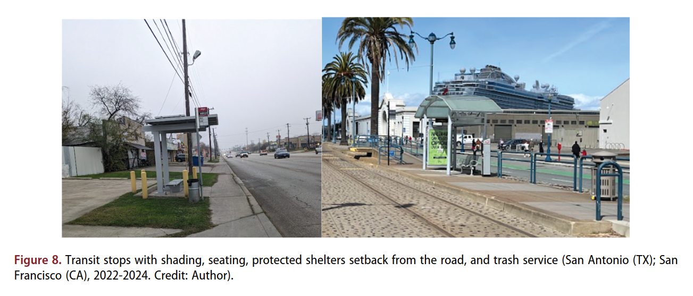

2025Transit accessibility
Evaluating public transportation through a caregivers’ lens
- Topic
- How transit policies, infrastructure, and station environments support—or burden—caregivers traveling with young children.
- Method
- Comparative assessment of 14 U.S. transit systems using route observations, a structured accessibility audit, air-quality measurements, and transit-director interviews.
- Implication
- Stroller access, elevators, safe waiting areas, restrooms, water, and weather protection should be treated as core transit infrastructure. Designing for caregivers also improves mobility for older adults and disabled riders.